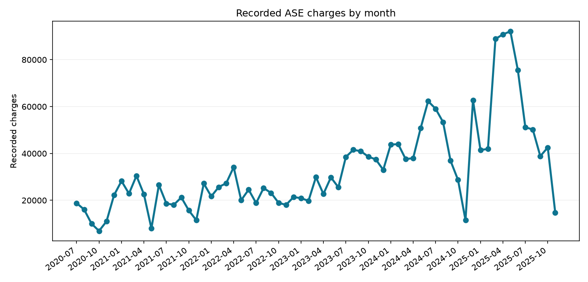

Data cleaning · SQL · Python · public operations
Speed Enforcement Data Quality
Turn a wide monthly spreadsheet of automated speed enforcement charges into an analysis-ready site-month table, while documenting the missing values and recurring site codes that affect interpretation.
Data cleaning decisions
- Reshape the monthly columns into one row per site instance and month.
- Keep blank and dash cells as missing; never silently convert them into zero charges.
- Build a site-instance key from code, location, and enforcement start date because codes can recur.
- Compare observed charges over time and by ward with the coverage limitations in view.


How to reproduce
- Install dependencies with
pip install -r requirements.txt. - Run
python src/analyze.pyto download and clean the workbook, then regenerate summaries and charts. - Use
sql/analysis.sqland the Power BI starter files inpowerbi/to explore the results.
Interpretation: Charge totals reflect the published observed values. Missing cells can represent unreported data; they do not imply zero charges or prove that a camera was inactive.